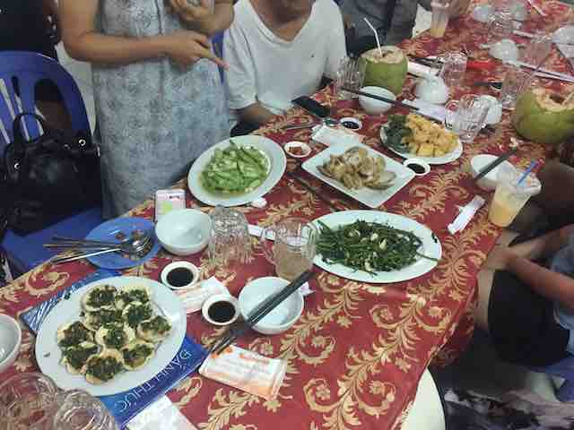
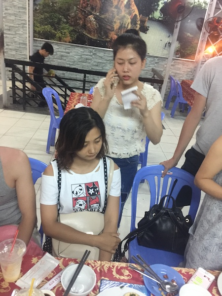
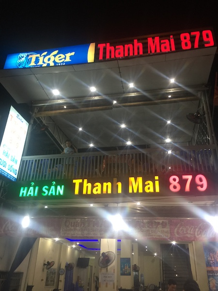

芽庄游记
1 2017-07-24 00:57 CST 1500829035 ATTACH
跟团去的，并不是什么纯玩团，会有两个购物点，去就可以了，并不强制购物， 但整体价格还相对便宜。但整个芽庄之旅体验非常糟糕。也是第一次出国，回国 之后由衷的感慨祖国的强大，先进与文明。
越南的海关工作人员真的会索取小费，入关的时候给了，开始的时候以为是导游为了让自己少一些 麻烦然后错误的引导大家，回程的时候才发现，如果没有给小费，工作人员真的 会各种怠慢，而且可能还会找茬儿，同事的签证有了一点点的污迹，都被拉去小 黑屋，然后被索取了200RMB就解决了。另外一个同事签证名字拼错了，竟然用 20RMB就解决了，而且还可以插队安检（准确的说，安检完全是形同虚设），如 果公职人员都是这样有钱能使鬼推磨，那得是有多么黑暗。再对比一下国内，你 真的会发现，我们的祖国是多么的先进和文明，公职人员是多么的认真负责。
第一天住的酒店五星级，还算挺好的，比较新，海景房，面朝大海春暖花开的感 觉。后面两天四星级酒店，环境也还可以，只是会停电。。。而且第一天就停了 大半天。。。基础设施啊。。。
芽庄除了海边，几乎就没有什么景点了，第一天去了一个什么什么寺，据说有些 历史了，景点小，几乎没什么可观赏的不说，到那就遇到了本地人大家，而且还 是城管出手。。。出门又遇到强买强卖的小朋友，拿着不知道是什么东西往你身 上塞，还不断的追着你要钱。。。我们只能灰溜溜的远离。
再说这民风吧，据之前来过的同事说，几年前芽庄人民还是很淳朴的，可是我们 这次却完全没有体验到。打车司机会绕路，即使你拿着手机给他导航，他还是会 装作听不懂你说什么，继续在错的路线上开，最后还要跟你要钱。再加上地接导 游各种讲的民风彪悍，什么飞车抢包的，什么坑蒙拐骗偷的。。。
吃饭我们遇到的事情也算是挺奇葩了，值得一说。首先，在芽庄，你用大众点评 之类的搜到的基本上都是中国人很多的地方。芽庄俄罗斯人和中国人都非常多， 但是俄罗斯人只在海边度度假而已，中国人就是在各个景点了，芽庄有几个岛， 有一些娱乐项目，上到岛上你会发现人山人海的都是中国人，比国内还要火爆。 有点跑偏，继续说这个吃的。去了一家海鲜餐厅，嗯，一定要特意说出这家餐厅 的名字叫879，这个餐厅就有意思了，你在点菜的时候，你问哪个菜多少钱，他就说你 点了哪个菜，然后还假装听不懂，然后菜单还是两份的，本地人一份，中国人一 份，我们还没有确定要吃什么，老板就把我们问过的菜上来了，还好我们制止的 早，但也就几个素菜，就花去了500多RMB，然后还各种说不清，真是第一次遇到， 感觉非常坑。    上面有说到去海岛上玩，一方面是人山人海的中国人，另一方面本地的娱乐项目 就如同走马观花，而且价格不菲，说好的深浅项目，只是下去洗了个澡，几分钟 就上来了，而且就一次，然后就下一波人，跟印钞机一样。另外海水也不清澈， 还不如三亚。。。
最后说一下购物环节，本来还算好吧，那个傻逼猪头地接导游因为我们不买乳胶 店的产品，就各种谩骂我们的同事，还不叫车来，我们足足在乳胶店等到中午1 点多，相当于国内的两点多，饭都没吃上。。。第二天我们就抗议了，开除了那 个导游，没再让她过来。另外回国的时候司机还跟我们要小费，明码标价，跟抢 似的，每次都让我们顶着大太阳等车，还真好意思要。。。反正我是没给。
最后我想说，越南虽然是个农业国，相对落后，但是出去了才会发现还是祖国好， 才会发现祖国的繁荣富强。